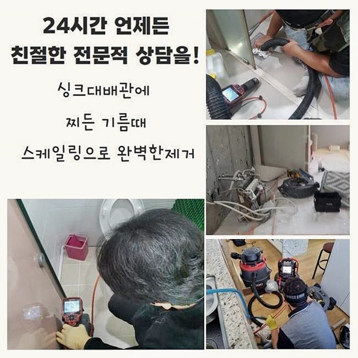
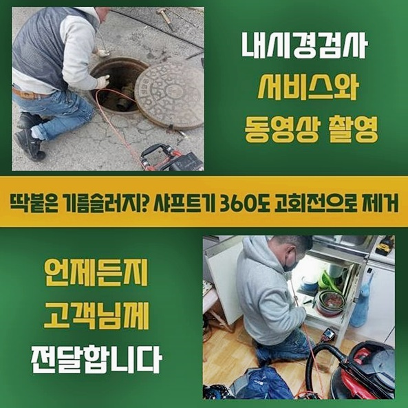
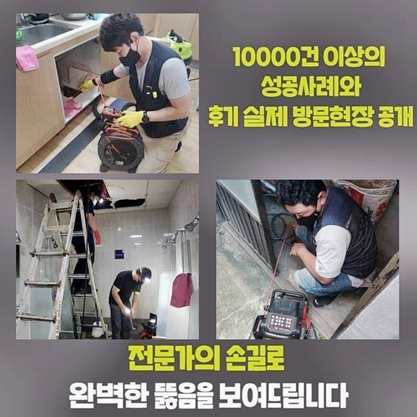
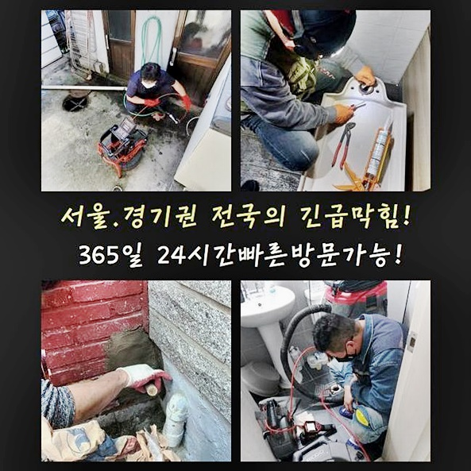
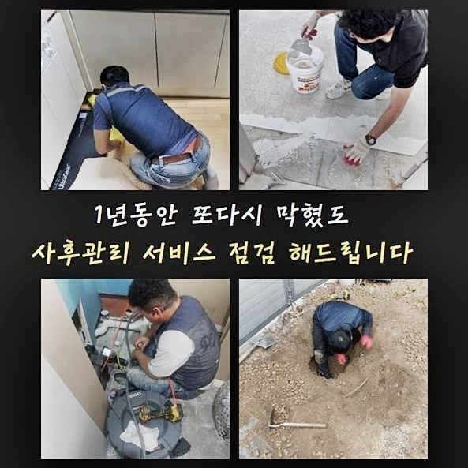
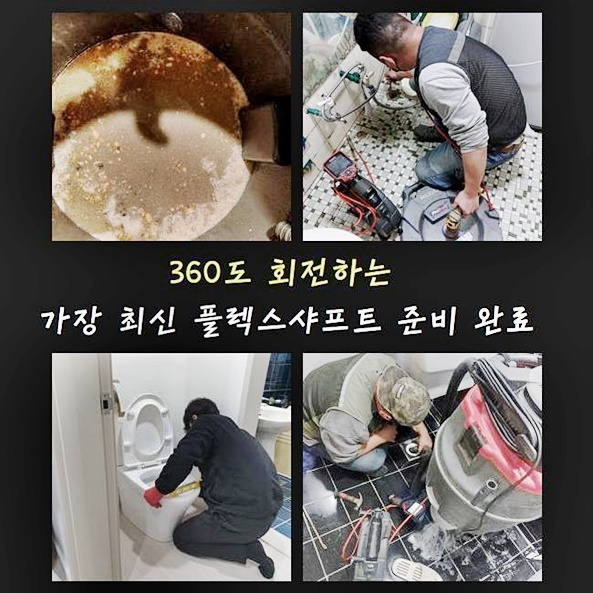
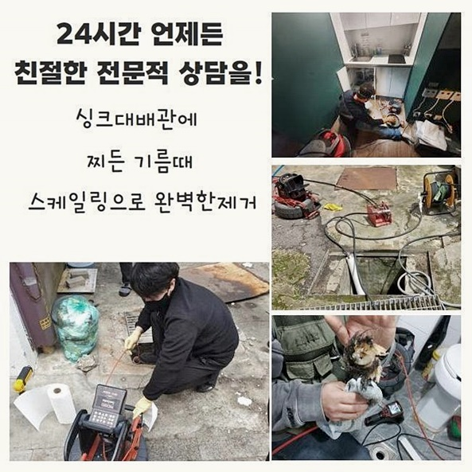

🏠 용인 중앙동대변기뚫음 모현면 배관뚫기 수리업체
용인 중앙동 변기막힘 전문 시공 후기

📋 작업 개요
- 위치: 용인 중앙동, 중앙동, 용인
- 서비스 유형: 변기막힘, 하수구막힘, 배관막힘, 집수정막힘, 누수수리, 역류해결, 뚫는업체, 고압세척
- 작업 일시: 2024. 8. 15. 10:31
- 업체명: 하수구수사대 (010-5615-2118)
🔍 문제 상황
용인 중앙동대변기뚫음 모현면 배관뚫기 수리업체
반가워요! 조속한내방을 책임지고있는 저희업체에서는 출장비에관해서 요구드리지않고 해결을못했을때 마찬가지로 적용해서 수리비를받지 않는답니다
저희업체를 방문해주시는 여러분을위해 12개월동안 추후관리를 제공하고있어요
막힘문제가 발생했을때 여러분은 어떤식으로 해결하고자 하나요
근래에 방문했던 작업사례로 막히는문제에 관해서 설명드리고자하니 참고해보시면 도움이될겁니다
수리난이도가 난잡하다고해서 타업체들에서 포기하기도 합니다
저흰 심혈을기울여 작업을진행해 하수구를 뚫어내기위해 애쓰고있죠
의뢰자의 시간에맞춰 내방까지 해드리고있죠
오늘작업도 무사하게 다녀올수있었는데요
내방이전엔 단순막힘이라고 예상했습니다
의뢰자분이 막힘상태를 촬영해 알려주신걸로 작업하기전에 예상한것인데요
그렇지만 직접살펴봤더니 연결되어있는 외부배관까지 막혀있는 현장이었습니다
내외부하수구를 모두수리하여 해결할수가 있었답니다

🔎 원인 분석
💡 전문가 진단: 정밀 진단 장비를 사용하여 슬러지의 고착 여부를 판명하고 타격/세척 작업을 실시했습니다.
다음현장으로 일반적인 가정집을 방문했는데 고객님께서 전달주신내용은 화장실쪽에서 물이조금씩 역류하다가 하루뒤에 확인해봤더니 역류하며 배수시스템이 멈췄다고 하셨습니다
답답한마음에 인터넷서칭으로 셀프시도를 진행하셨다고 말해주셨죠
무리하게 시도하다가 이물질과 오물들이 흘러넘치면서 좋지않은냄새까지 발생하여 상태가 심화된것인데요
자가조치로 해결되지못하고 일이커지자 배관업체를 찾아보다가 전화를주신것이죠
역류증세는 거의 배관내부에서 오염물질이 진입하고 계속쌓이게되어 완전하게 막히는것이죠
막힘현상을 해소키기위해 전문기계들을 활용했는데요
먼저석션기로 하수구속에있는 각종오물을 빼내주는데요
위과정을 우선순위로 착수해내지 못한다면 확실한 해결로는 이어질수가없어요
이후엔 하수구안속의 석회들을 플렉스샤프트로 제거하면된답니다
플렉스샤프트는 딱딱하게굳어진 잔해물질을 분쇄하는 장비입니다
한가지더 필수적인기계를 알려드려보겠습니다
막힘문제가 나타난지점을 알아내기위해서는 내시경기계가 필요해요
배관카메라기를 통해서 하수구내부 안쪽까지 확인할수있어 확실히 막힌원인을 발견할수있죠
내시경카메라로 증세를확인하니 욕실과이어진 배수관에도 증세가있는걸 파악할수있었죠

🔧 작업 과정
외부로이동해서 집수정뚜껑을 들추니 이물이가득하여 흘러넘칠지경이었죠
배수관막힘의 원인이었던만큼 오염물세척을 착수하고자했어요
입구에들어찬 물을흡입하고나서 내부작업을 진행하기로했죠
퍼내보면 생각과는다르게 양이많다보니 시간이걸릴수 있답니다
하지만 이 과정이 중요한 단계이니 다 빨아들일 수 있도록 했습니다
하수구입구 주변이 보였으므로 하수구안속 진입이 가능하게끔 뚫어주는 전동관통기를 활용하여 통수를진행했어요
통수작업후 고압세척기를 통한 작업과정을 착수하게되는데 강력한압력으로 해당부위에 물을쏘는건데요
고압세척장비는 여러도구중 전문가의 손길이필요한 기기입니다
강력한압의 물을쏘기에 세심한작업이 요구되는겁니다
고압세척을 마치게되면 찌꺼기와 이물들이 내벽에서 떨어지게됩니다
마지막과정으로 필수과정으로 진행되는것은 석션장비로 잔여물을 빨아들이는 과정인데요
이물질제거를 마친후에는 세척과정이 잘 이루어졌는지 카메라기기로 배관내부를 살핍니다
소량의오염물이 보였기에 한번더제거하여 완벽하게 마무리해냈어요
정상적인 배수상황이 돌아왔는지까지도 확인하고있죠
의뢰자와함께 배수상황을 확인한뒤에야 철수해드리니 우려마세요
막혀있는배관을 뚫지않고 내버려두신다면 2차적피해로 이어져서 역류와누수같은 현상이 발현될수있으므로 문제를보이는즉시 조치하시는것이 좋답니다
뾰족한물건들로 배관을후비는 행동들은 손상문제를 유발시킬수있으므로 삼가하시는게 좋습니다
여러번이나 말했지만 혼자직접 무리하여 배관에손대면 문제가 심각해질수있으니 조심해주세요!
다세대로 이루어진 건물과 식당같이 영업을 하는곳이라면 주기적인 점검을통해 예방해보는게 막힘현상을 예방하는 지름길입니다
앞서설명드린 내용과같이 정확히 해결해보고 싶으시다면 막힌원인에 대해서 알아낸뒤 방법을찾는게 중요하답니다
배수구막힘을 방치시키지말고 저희에게 맡겨주세요!


✅ 작업 완료
전문가를 호출할때 살펴봐야할 사항이많은데 설명드려보면 전문기계를 다양히 갖추고있는지와 작업비에대해 작업시작전에 고지하는지 체크해야해요
저희들의경우 현장에내방해서 문제를파악하여 작업비를 일러드린뒤 고객께서 동의해야지만 수리를 진행하기에 안심해주세요
한시간안으로 내방해드릴수있고 작업과정에있어 분명히 보여드리기에 우려하지마세요!
저희들에게 맡겨주신다면 믿음에 보답하게끔 확실하게작업해 성공적인결실로 보여드릴게요!
이것외에도 해소되지 않으신것들이 있으면 마음편안히 시간관계없이 연락하셔서 질의하시면 친절히 응대해드릴게요
저희의글이 도움되셨을거라 생각하고 이만 마치도록할게요! 감사합니다!




⚠️ 베란다 누수 및 방수 관리 방법
- ✅ 비가 많이 올 때 창틀 주변이나 아래층 천장에 얼룩이 생기는지 정기적으로 확인해 보세요.
- ✅ 우수관 주변 실리콘 마감이 들뜨거나 깨진 틈새가 있는지 손상 여부를 수시로 체크하세요.
- ✅ 베란다 바닥 타일의 줄눈(메지)이 소실되면 그 틈으로 물이 침투하여 누수가 유발됩니다.
- ✅ 누수 의심 증상 발견 시 방치하면 아래층 손실이 커지므로 즉시 전문가의 진단을 받으십시오.
💡 핵심 정리
- 확실한 장비 작업(내시경 점검 및 샤프트 스케일링)으로 원인을 뿌리 뽑습니다.
- 작업 후 1년 이내에 동일한 부위 재발 시 100% 무상 A/S 서비스를 보장합니다.
- 서울 · 경기 · 인천 전 지역에 24시간 언제든 긴급 출동할 수 있도록 항시 대기 중입니다.
❓ 자주 묻는 질문 (FAQ)
🚨 용인 중앙동 변기막힘 문제로 고민이신가요?
정확한 원인 진단과 확실한 시공으로 재발 없는 해결을 약속드립니다.
24시간 긴급 출동 | 서울 · 경기 · 인천 전지역 | 1년 내 재발 시 무상 A/S